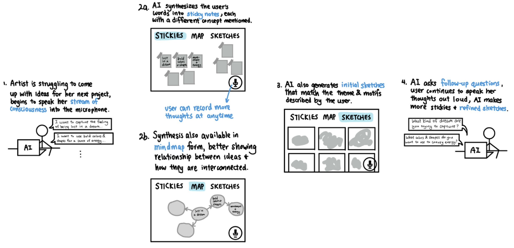

ArtFlow: The Art of Innovation
Overview
In this project, I collaborated with 2 classmates to create early designs for an artist's "toolbox" with 3 products:
- NoticeAI, a pair of AI-powered glasses that bring thought-provoking objects, interactions, and other occurrences to the user's attention as they are wearing them.
- BrainstormAI, a tool that helps artists overcome creative blocks by transforming their stream of consciousness into tangible ideas.
- PenAI, a wrapper around existing physical utensils that offers suggestions, jumpstarts, and reflection prompts for deeper introspection.
Step 1: Diary Study
A diary study is a research method used to collect qualitative data about user behaviors, activities, and experiences over time. My team was interested in designing something for student artists. We conducted a diary study on 13 Stanford student artists involved the visual arts, performing arts, or writing. For 3 consecutive days, each participant recorded a moment during the day when the exercised in a creative activity, whether it be praciting piano, doing an assignment for a screenwriting class, or sewing a dress. Then, we conducted a 30-minute followup interview to learn about their background reflect on their experience throughout the study.
Step 2: Grounded Theory Synthesis and HMWs
After collecting data from the interviews, we performed grounded theory synthesis, constructing hypotheses and theories using inductive reasoning.
Grounded Theory Synthesis (PDF)
Based on our grounded theories, we came up with 35 "How Might We" (HMW) questions then narrowed it down to three final questions:
- HMW help students who make art feel "human" physicality in their digital work, like computer science?
- HMW help student artists identify serendipitous moments of inspiration in everyday life for their practice?
- HMW help student artists feel more comfortable calling themselves "artists" by lowering the barrier of expectation?
Full List of HMW Questions (PDF)
Step 3: Brainstorming Solutions
We brainstormed solutions to our final three HMW questions and each sketched a few prototypes.
Step 4: Rapid Experimentation
Each of the three team members chose one favorite solution to move forward with, and designed and carried out a rapid experiment for it. I chose to expand upon "BrainstormAI", the second of my three refined prototypes. BrainstormAI is an AI-powered tool designed to help artists overcome creative blocks by transforming their stream of consciousness into tangible ideas. By speaking into a microphone, the artist's words are synthesized into structured sticky notes and mind maps, providing a visual representation of their thoughts. Then, based on these words, the AI generates initial sketches that can serve as inspiration for the artist's next project; these sketches can take many forms, such as rough outlines, basic shapes, or artworks scraped from the internet. The artist can then adjust, group, or record additional thoughts, while the AI continues to generate more stickies, mind map elements, and refined sketches. Follow-up questions from the AI allow for a more in-depth exploration of the artist's ideas, leading to a more fruitful brainstorming session.
To test this idea, I designed and carried out a rapid experiment using a Wizard-of-Oz prototype for BrainstormAI, without any AI implementation. The prototype utilized Zoom, Miro, Google Slides, and existing text-to-image conversion tools to simulate the brainstorming sessions with the tool. I ran this experiment on two participants and synthesized the results.
BrainstormAI Rapid Experimentation Plan (PDF)
BrainstormAI Rapid Experimentation Results (Miro)
My two teammates did the same, one for PenAI, a wrapper around existing physical utensils that offers suggestions, jumpstarts, and reflection prompts for deeper introspection, and another for NoticeAI, a pair of AI-powered glasses that bring thought-provoking objects, interactions, and other occurrences to the user's attention as they are wearing them. Each of us created a one-slider to present our findings.
Rapid Experimentation One-Sliders (Google Slides)
Step 5: Final Deliverable - Design Fiction
Design fiction is a design practice aiming at exploring and criticising possible futures by creating speculative, and often provocative, scenarios narrated through designed artifacts. In this two-page magazine spread, we sell BrainstormAI, PenAI, and Notice AI with words deliberately chosen to provoke not only excitement but also questions about the user's autonomy when they overly rely on these AI-powered tools.